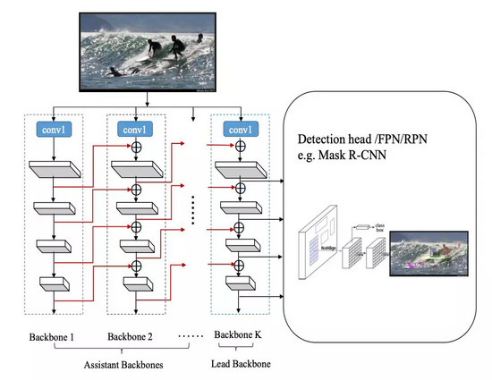
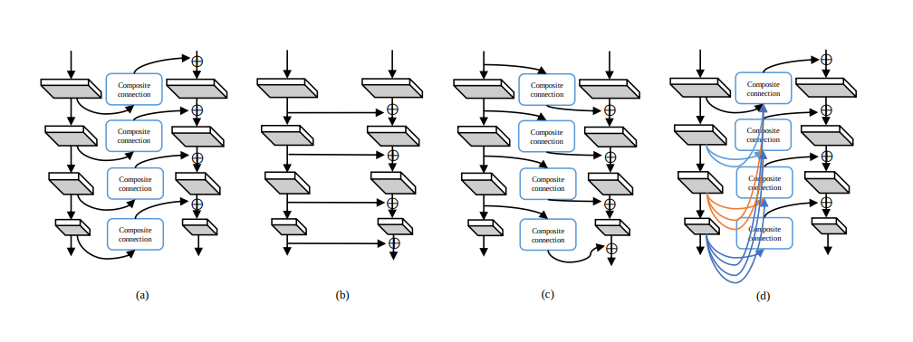
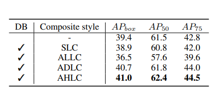
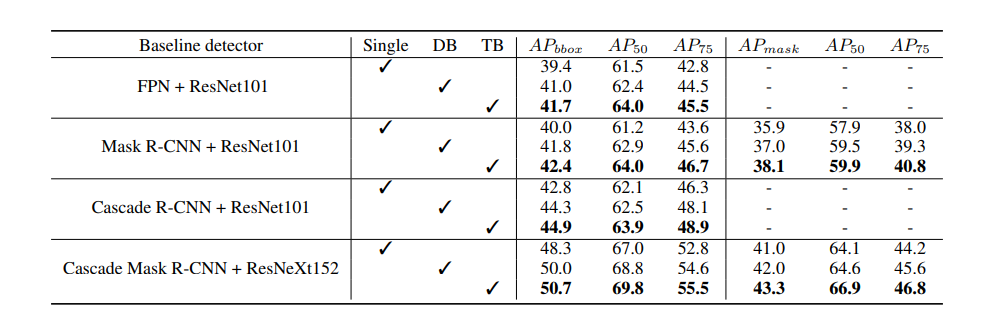
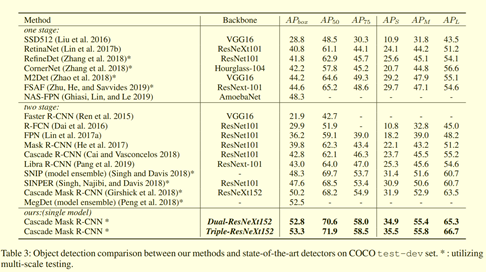

论文目标
- 每次一个新的网络出现都需要经过高代价的ImageNet预训练处理。
- 现存主干网络都是为分类场景设计，直接拿来用，效果并不能做到最优。
综上在现有主干网络的基础上建立一个更有强大的主干网络，称为复合主干网络。 ****
论文主要做法

组合连接邻近独立优秀主干网络，CBNet 将前一个主干网络的输出特征（即高层抽象特征）输入到下一个主干网络的对应层级中，一直到最后一个主干网络（Lead Backbone），然后使用 Lead Backbone 的特征图进行目标检测。通过这样做，将多个高级和低级特性融合在一起，以生成更丰富的特征表示。本网络结构的预训练模型参数来自于每个独立的网络。

四种主干组合的形式： 1. 邻近高级组合：（Adjacent Higher-Level Composition，AHLC）来自辅助主干网的每个输出特征使用复合连接块输入到相邻的主干网中。
同层组合：（Same Level Composition，SLC）是另一种简单的合成样式，它将前一个主干的相邻低层阶段的输出提供给后一个主干。如图所示，此样式不使用复合连接块。来自低层主干网的特征被直接添加到相邻的主干网中。
邻近低层组合：（Adjacent Lower-Level Composition，ALLC）非常类似于AHLC。唯一不同的是，来自前一个主干网底层的特征被传递给后续的主干网。
密集高层组合：（Dense Higher-Level Composition，DHLC）的灵感来自DenseNet，每一层都连接到所有后续的层，在一个阶段建立一个稠密的连接。
这四种组合方式，AHLC效果较好：

论文效果
- 它将 FPN、Mask R-CNN 和 Cascade R-CNN 在 COCO 数据集上的 mAP 提升了 1.5%-3.0%。
- 简单地将 CBNet 集成到基线检测器 Cascade Mask R-CNN，即可实现单个模型在 COCO 数据集上的mAP达到 53.3。


特征提取效果
研究者认为 CBNet 性能优于单个目标检测主干网络的根本原因是：相比于后者，CBNet 提取出的基础特征更具表示性。
对于每一个主干网络，上图根据前景物体的大小，对 Res2 和 Res5 进行可视化。我们可以看到 CBNet 的特征图更具表示性，它的前景物体激活值更大，背景的激活值更小。
论文代码
https://arxiv.org/pdf/1909.03625.pdf https://github.com/PKUbahuangliuhe/CBNet